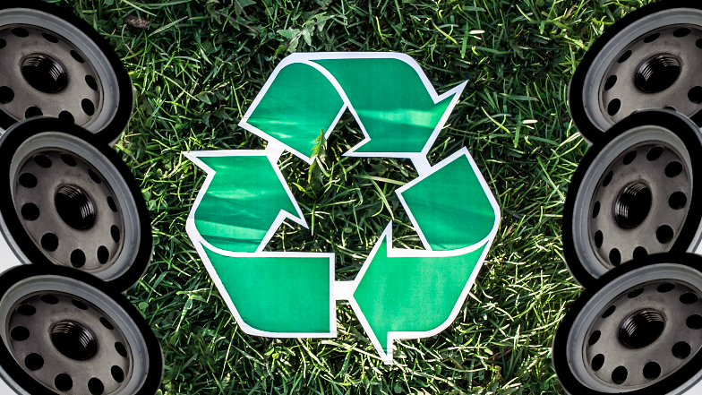

O EcoGarage é um projeto inovador que visa auxiliar contra o problema ambiental do descarte inadequado de resíduos automotivos.
O objetivo central do EcoGarage é abordar o problema do descarte inadequado de resíduos automotivos, como pneus, óleos usados e peças sem utilidade, promovendo práticas mais sustentáveis na indústria automotiva. Através do projeto visa conscientizar, educar e engajar diversos públicos, incluindo oficinas mecânicas, lojas de autopeças, consumidores e órgãos governamentais. Além disso, busca oferecer soluções inovadoras, como avaliações personalizadas de sustentabilidade, informações sobre descarte responsável e um sistema de recompensas, com o objetivo de transformar práticas e promover um impacto positivo na gestão de resíduos automotivos, contribuindo para um ambiente mais saudável e sustentável.
A participação no EcoGarage oferece às empresas da indústria automotiva uma oportunidade única de aprimorar suas práticas de gestão de resíduos. Além de promover uma economia financeira significativa com o selo EcoGarage, as empresas podem fortalecer sua reputação ao adotar práticas ambientalmente responsáveis e de maneira facilitada, conquistando clientes conscientes.

A conformidade regulatória, acesso a treinamento e desenvolvimento, colaboração com uma rede diversificada, direcionamento de clientes sustentáveis, incentivos e reconhecimento, e a possibilidade de inovação contínua destacam-se como benefícios tangíveis. Fazer parte do EcoGarage não apenas contribui para a preservação ambiental, mas também oferece vantagens competitivas e oportunidades de crescimento para empresas comprometidas com a sustentabilidade na gestão de resíduos automotivos.
Consumir serviços e produtos de empresas com o selo EcoGarage traz uma série de benefícios tanto para os consumidores quanto para o meio ambiente. Empresas certificadas pelo EcoGarage demonstram comprometimento com práticas sustentáveis na gestão de resíduos automotivos. Ao escolher esses serviços, os consumidores contribuem para a redução da poluição ambiental, promovem a reciclagem de materiais automotivos e apoiam ações que visam a preservação do meio ambiente.
Além disso, o selo EcoGarage representa um padrão de qualidade ambiental e social, indicando que a empresa adota medidas responsáveis em sua operação. Os consumidores podem ter a confiança de que estão apoiando negócios que priorizam a sustentabilidade e a gestão adequada de resíduos, contribuindo para um setor automotivo mais consciente e ecologicamente equilibrado. Escolher empresas com o selo EcoGarage significa fazer parte de um movimento que busca mudanças positivas e a construção de um futuro mais sustentável.
O EcoGarage é um projeto inovador que contribui para a preservação ambiental ao abordar o descarte inadequado de resíduos automotivos. Através de avaliações personalizadas, sugestões de rotas sustentáveis e incentivos para práticas ecológicas, a plataforma promove conscientização e mudança de comportamento.
Além disso, orienta sobre o descarte responsável, integra-se a veículos conectados e cria uma comunidade online, criando um ambiente sustentável e educativo para usuários interessados em práticas automotivas ecologicamente corretas.